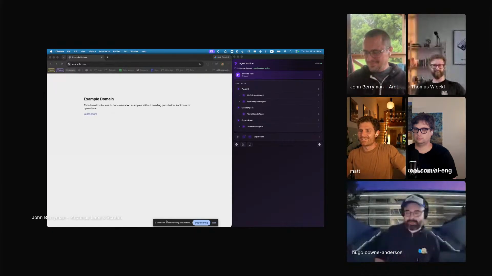
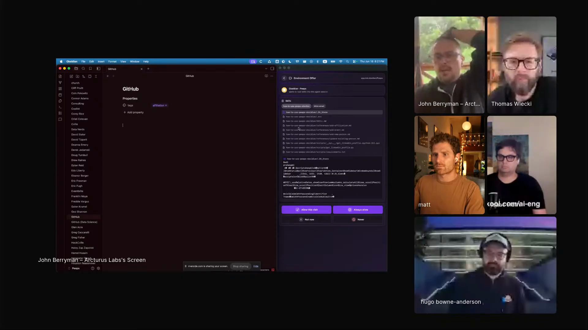
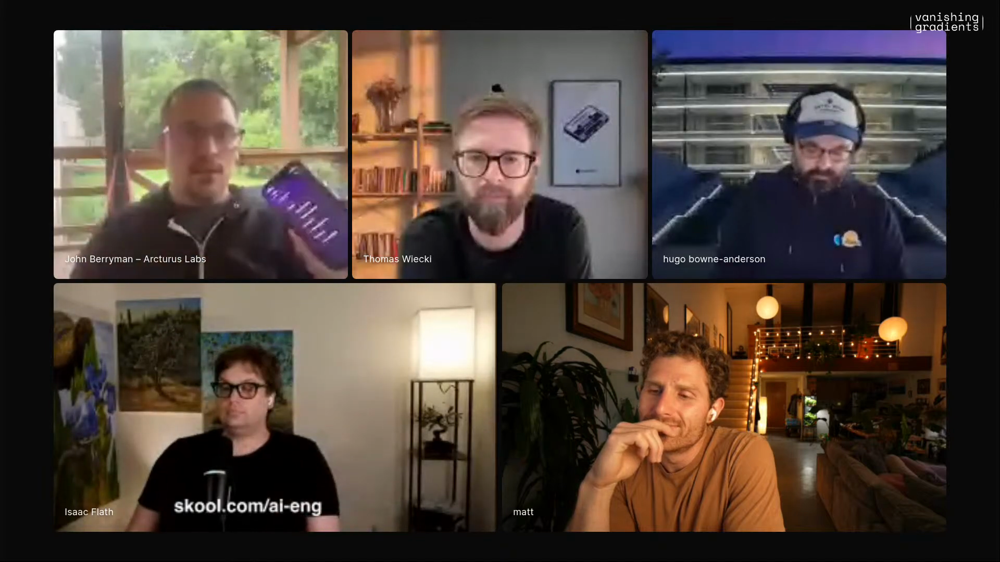
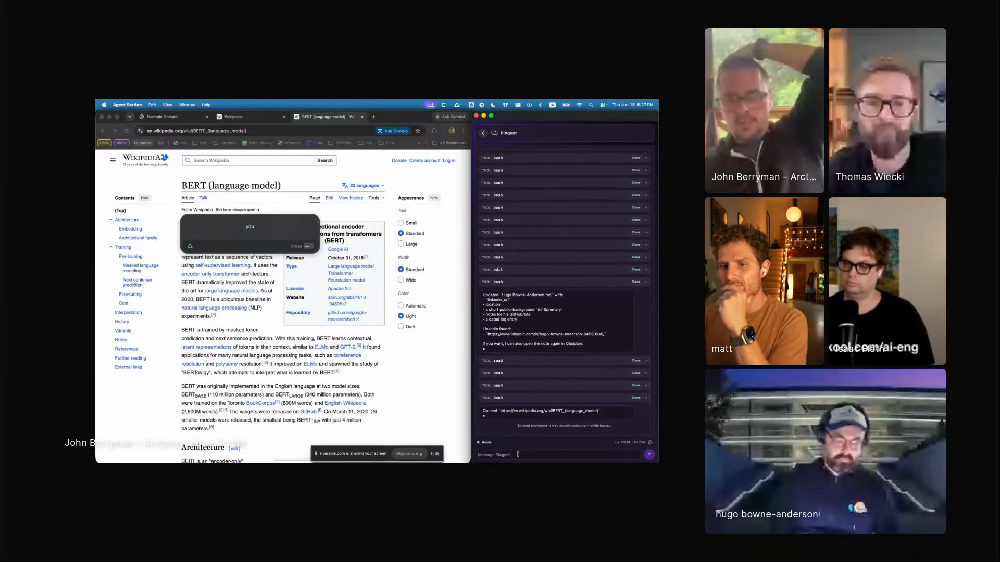

agents-that-follow-you
A portable agent harness that follows the human across apps, websites, and places, picking up local affordances from each stop.
Rook is John's personal agent, and it follows him around. Open Obsidian and it sees the people vault. Move to Wikipedia and it can find the BERT passage he cares about. Put it on his phone and a grocery store can become more than a dot on a map: inventory, aisles, substitutions, and John's own shopping list in one route. The early GitHub Copilot story is still in there too: John helped work on Copilot when there was no chat, just a tiny completion model and a lot of context-packing tricks.

"This is the first tool we've ever made that can talk back to us."
John worked on early GitHub Copilot at GitHub before ChatGPT made chat the default shape of AI products. The model did document completion. The context window was tiny. Useful behavior came from building pseudo-documents: comments, neighboring file facts, and just enough surrounding state for a completion model to infer the job.
Rook starts from the opposite frustration. The model can now talk, call tools, and run inside agent harnesses, but the harness still spends too much of its life in a terminal working on code. John wants the same agent to move with him through the places where his tasks actually live.

"By and large, our agent harness lives in the terminal and works on code."


"Whenever it follows me to a new environment, it gets the superpowers of that environment."
John asks Rook to open the BERT article, then asks for the part about the original model size. Wikipedia lookup is ordinary. The live move is the page-local action: find the right passage and put John's attention back on the evidence.
He calls the web affordance "open agent protocol," then immediately laughs it off as a name for something that should exist. The page should send state to the user's agent, receive requests back, and let the user reshape what is visible.

"I was actually lying about the open agent protocol. It's just a thing that absolutely should exist."
A portable agent harness that follows the human across apps, websites, and places, picking up local affordances from each stop.
A reconstructed page-local skill from the demo: open the requested article, find a passage, and make the evidence visible in context.
Local Obsidian affordances for John's people records, using the vault and CLI so the agent can navigate and update the place he already works.
A grocery-store concept: merge John's list with store inventory, aisle shape, item locations, and substitutions.
The moment that changed John's view of skills: use English to author behavior, then add enough app chrome to seat it inside Zoom.
John turns small tasks into skills, then pays for it when the five-minute task becomes two days of skill maintenance.
"My life has become kind of like an agentic nightmare."